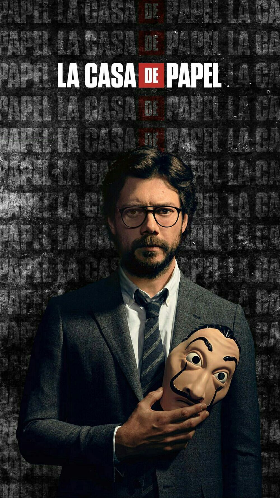

Silene Oliveira, conocida bajo el apodo de Tokio, es un personaje de La casa de papel. Es un miembro de la banda atracadora a la Fábrica Nacional de Moneda y Timbre. Está en búsqueda policial por diferentes asaltos.

Sergio Marquina, alias El Profesor, es un personaje de La casa de papel. Es el líder de la banda de atracadores a la Fábrica Nacional de Moneda y Timbre. Es un hombre del que poco se sabe y al que le gusta tener calculado hasta el más mínimo detalle
Andrés de Fonollosa Gonzalvez, conocido bajo el alias de Berlín, es un personaje de La casa de papel. Es el líder de la banda que planea atracar la Fábrica Nacional de Moneda y Timbre
Una infancia programando y hackeando. Una adolescencia con la mirada en la Red. Esa capacidad y esos conocimientos le hicieron jefe técnico de una empresa de seguridad siendo aún muy joven. Es el maestro tecnologico del grupo

Agustín Ramos, conocido bajo el apodo de Moscú, es un personaje de La casa de papel. Es uno de los miembros atracadores a la Fábrica Nacional de Moneda y Timbre. Es el encargado de realizar el túnel que los sacará de allí con el dinero. Es el padre de Denver

Daniel Ramos, conocido bajo el apodo de Denver, es un personaje de La casa de papel. Es un miembro de la banda atracadora de la Fábrica Nacional de Moneda y Timbre. Es el hijo de Moscú

Ágata Jiménez, conocida bajo el apodo de Nairobi, es un personaje de La casa de papel. Es una de las atracadoras de la Fábrica Nacional de Moneda y Timbre. Es la experta falsificadora del grupo
Mirko Dragic, conocido bajo el apodo de Helsinki, es un personaje de La casa de papel. Es un miembro de la banda atracadora de la Fábrica Nacional de Moneda y Timbre.

Radko Dragic, conocido bajo el apodo de Oslo, es un personaje de La casa de papel. Es un miembro de la banda atracadora de la Fábrica Nacional de Moneda y Timbre.
La inspectora, responsable policial del secuestro. A la Inspectora Raquel Murillo este asunto le viene en el peor momento. El secuestro con rehenes que tiene que negociar le cae en la fiesta infantil de su niña Paula, de 7 años. Con una tensión creciente en su vida por la gestión imposible de una custodia arrebatada a su ex marido.
Subinspector. A pesar de llevar más de 20 años años en el cuerpo, Ángel no recuerda ni una sola ocasión en la que se haya sentido tan intimidado como el día en el que conoció a Raquel. Era un caso delicado, un loco encaramado a un puente que amenazaba con suicidarse
Mónica Gaztambide, posteriormente bautizada como Estocolmo, es un personaje de La casa de papel. Fue la secretaria del director de la Fábrica Nacional de Moneda y Timbre.
Se considera un buen jefe, un buen esposo, un buen padre y, sobre todo, un excelente amante. Dirige la fábrica con solvencia y siempre se muestra atento con todos sus empleados. Pero cuando el atraco comienza, el jefe no tarda en revelar su verdadera cara, la de un hombrecillo asustado y egoísta dispuesto a hacer lo que sea por sobrevivir

Esta foto representa a los personajes de la casa de papel